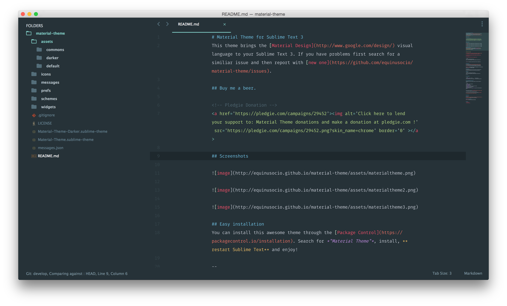

subl Shell command
For convenience, we can create a shell command or alias for Sublime Text as bellow:
#bash shell
ln -s "/Applications/Sublime\ Text.app/Contents/SharedSupport/bin/subl" /usr/bin/subl
#zsh shell
alias subl="'/Applications/Sublime Text.app/Contents/SharedSupport/bin/subl'"
alias nano="subl"
export EDITOR="subl"
Active the subl command in current shell:
#bash shell
source ~/.bashrc
#zsh shell
source ~/.zshrc
Now, we can open anything with Sublime Text in our shell as bellow:
subl .
# more help
subl help
Recommened User Settings
# Sublime Text -> Preferences -> Settings-User
"always_show_minimap_viewport": true
"draw_minimap_border": true,
"highlight_line": true,
"highlight_modified_tabs": true,
"ignored_packages":
[
"Vintage"
],
"show_encoding": true,
"show_full_path": true,
"show_line_endings": true,
"open_files_in_new_window": false,
"translate_tabs_to_spaces": true
Package Control
Package Control is the package manager of Sublime Text. To install the Package Control, go to View -> show Console，enter the corresponding code bellow according to the version your Sublime Text.
SublimeText 3
import urllib.request,os; pf = 'Package Control.sublime-package'; ipp = sublime.installed_packages_path();urllib.request.install_opener(urllib.request.build_opener( urllib.request.ProxyHandler()) );open(os.path.join(ipp, pf), 'wb').write(urllib.request.urlopen('http://sublime.wbond.net/' + pf.replace(' ','%20')).read())
SublimeText 2
import urllib2,os; pf='Package Control.sublime-package'; ipp = sublime.installed_packages_path(); os.makedirs( ipp ) if not os.path.exists(ipp) else None; urllib2.install_opener( urllib2.build_opener( urllib2.ProxyHandler())); open( os.path.join( ipp, pf), 'wb' ).write( urllib2.urlopen('http://sublime.wbond.net/' +pf.replace( ' ','%20')).read()); print( 'Please restart Sublime Text to finish installation')
Use command + shift + p to launch the Package Control.
For more details on Package Control, please check packagecontrol.io
Recommended Theme
We recommended the cool dark Material Theme。
Preview：

Recommened Plugins
# how to install a plugin?
Use `shift + cmd + p` to open the package control
Enter “Package Control: Install Package”
Enter the name of the target plugin
- Emmet （emmet.io）
- converttoUTF8（For Chinese guys）
- git
- sidebarenhancement
- docblockr
- Bracket Highlighter
- SCSS
- markdownPerview
- evernote